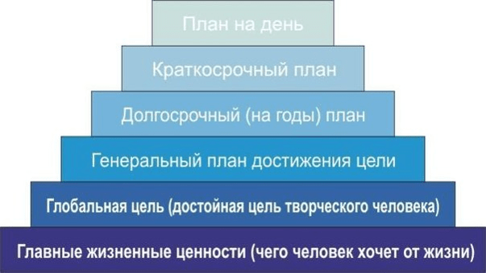

Это готовая система планирования, которая помогает правильно распорядиться своим временем и достичь поставленных целей. Бенджамин Франклин (1706-1790) – американский политический деятель. Б. Франклина отличала фантастическая работоспособность и уникальная целеустремленность. В возрасте двадцати лет он составил план достижения целей на всю жизнь вперед. На протяжении всей жизни он следовал этому плану, четко планируя каждый день. Его план достижения целей получил название «пирамида Франклина» и выглядит примерно так:
1. Фундаментом пирамиды являются главные жизненные ценности. Можно сказать, это ответ на вопрос: «С какой миссией вы пришли в этот мир?» Что вы хотите получить от жизни? Какой след на Земле хотите оставить после себя? Бытует мнение, что не наберется и 1% живущих на планете людей, которые бы об этом задумывались серьезно. Другими словами, это вектор направления движения к своей мечте.
2. Основываясь на жизненных ценностях, каждый для себя ставит глобальную цель. Кем он хочет стать в этой жизни, чего планирует добиться?
3. Генеральный план достижения целей – это фиксация конкретных промежуточных целей на пути достижения глобальной цели.
4. План на один, три, пять лет называется долгосрочным. Здесь важно определиться с точными сроками исполнения.
5. План на месяц, а потом и на неделю – это краткосрочный план. Чем продуманнее он будет, чем чаще вы будете его анализировать и корректировать, тем эффективнее будет работа.
6. Последний пункт в плане достижения целей – это план на каждый день.